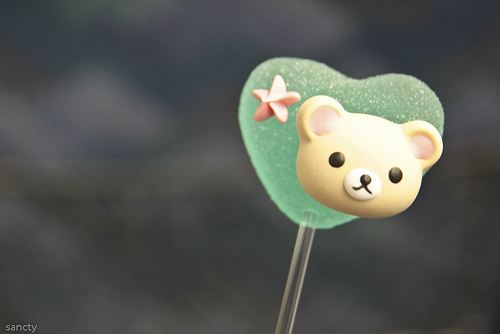

第一篇 《静女》
静女其姝，俟我于城隅。 爱而不见，搔首踟蹰。 静女其娈，贻我彤管。 彤管有炜，说怿女美。 自牧归荑，洵美且异... 第一篇 《静女》
静女其姝，俟我于城隅。 爱而不见，搔首踟蹰。 静女其娈，贻我彤管。 彤管有炜，说怿女美。 自牧归荑，洵美且异...
第二篇 《伐檀》
坎坎伐檀兮，置之河之干兮，河水清且涟猗。 不稼不穑，胡取禾三百廛[1]兮？不狩不猎，胡瞻尔庭有县[2]...

《硕鼠》
硕鼠硕鼠，无食我黍！
三岁贯女，莫我肯顾。
逝将去女，适彼乐土。
乐土乐土，爰得我所？
硕鼠硕鼠，无食我麦！...
《君子于役》
君子于役，不知其期，曷至哉？鸡栖于埘，日之夕矣，羊牛下来。
君子于役，如之何勿思！君子于役，不日不月，...